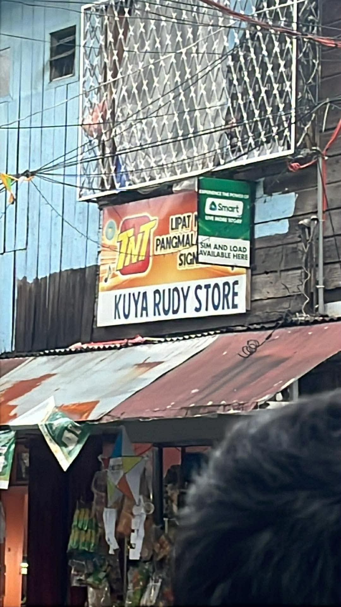

Your neighborhood sari-sari store
Kuya Rudy
Store
Kuya Rudy Store is a friendly neighborhood sari-sari store located in the heart of Ermita, Manila. Run by Javie Fababeir, the store has been a community staple since 2006 — a go-to spot for everyday essentials, merienda favorites, mobile load, and GCash services. Whether you need a quick Nescafe before class, a pack of Pancit Canton for merienda, or just someone to chat with, Kuya Rudy Store is the kind of place where everybody knows your name. Drop by for a snack, stay for the kwento!
| Address | Zone 071, 702 Mercedes St, Ermita, Manila, 1000 Metro Manila |
|---|---|
| Opening hours | Open Daily, 7:00 AM – 9:00 PM |
| Price range | ₱5 – ₱200 (budget-friendly, cash or GCash) |
| Best time to visit | Morning for fresh stock, afternoon for merienda rush |
| Services | GCash Cash In/Cash Out, Sim Load, Free Delivery (₱200+) |
| Contact | +64 9944884520 · Javie8180@gmail.com |